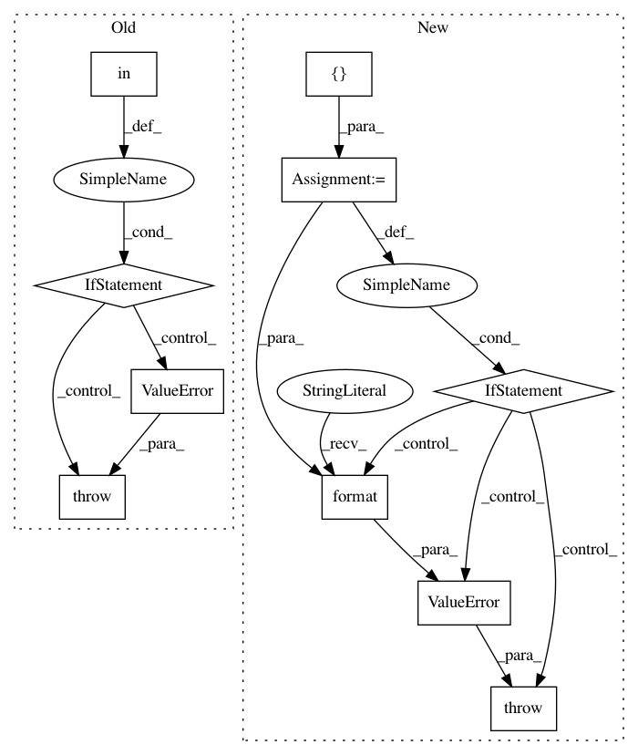

cc94a4abfd99ff7a202b8c01ca0dc2c82811980d,autosklearn/estimators.py,AutoSklearnClassifier,fit,#AutoSklearnClassifier#Any#Any#Any#Any#Any#Any#,619
Before Change
// type of data is compatible with auto-sklearn. Legal target
// types are: binary, multiclass, multilabel-indicator.
target_type = type_of_target(y)
if target_type in ["multiclass-multioutput",
"continuous",
"continuous-multioutput",
"unknown",
]:
raise ValueError("classification with data of type %s is"
" not supported" % target_type)
// remember target type for using in predict_proba later.
self.target_type = target_type
super().fit(
X=X,
After Change
// type of data is compatible with auto-sklearn. Legal target
// types are: binary, multiclass, multilabel-indicator.
target_type = type_of_target(y)
supported_types = ["binary", "multiclass", "multilabel-indicator"]
if target_type not in supported_types:
raise ValueError("Classification with data of type {} is "
"not supported. Supported types are {}. "
"You can find more information about scikit-learn "
"data types in: "
"https://scikit-learn.org/stable/modules/multiclass.html"
"".format(
target_type,
supported_types
)
)
// remember target type for using in predict_proba later.
self.target_type = target_type
super().fit(
X=X,
In pattern: SUPERPATTERN
Frequency: 3
Non-data size: 10
Instances
Project Name: automl/auto-sklearn
Commit Name: cc94a4abfd99ff7a202b8c01ca0dc2c82811980d
Time: 2020-08-14
Author: 44504424+franchuterivera@users.noreply.github.com
File Name: autosklearn/estimators.py
Class Name: AutoSklearnClassifier
Method Name: fit
Project Name: Qiskit/qiskit-aqua
Commit Name: c7042ae38552e58476c048237cd80d3fe087cdd7
Time: 2019-02-13
Author: chenrich@us.ibm.com
File Name: qiskit/aqua/utils/entangler_map.py
Class Name:
Method Name: validate_entangler_map
Project Name: automl/auto-sklearn
Commit Name: cc94a4abfd99ff7a202b8c01ca0dc2c82811980d
Time: 2020-08-14
Author: 44504424+franchuterivera@users.noreply.github.com
File Name: autosklearn/estimators.py
Class Name: AutoSklearnRegressor
Method Name: fit